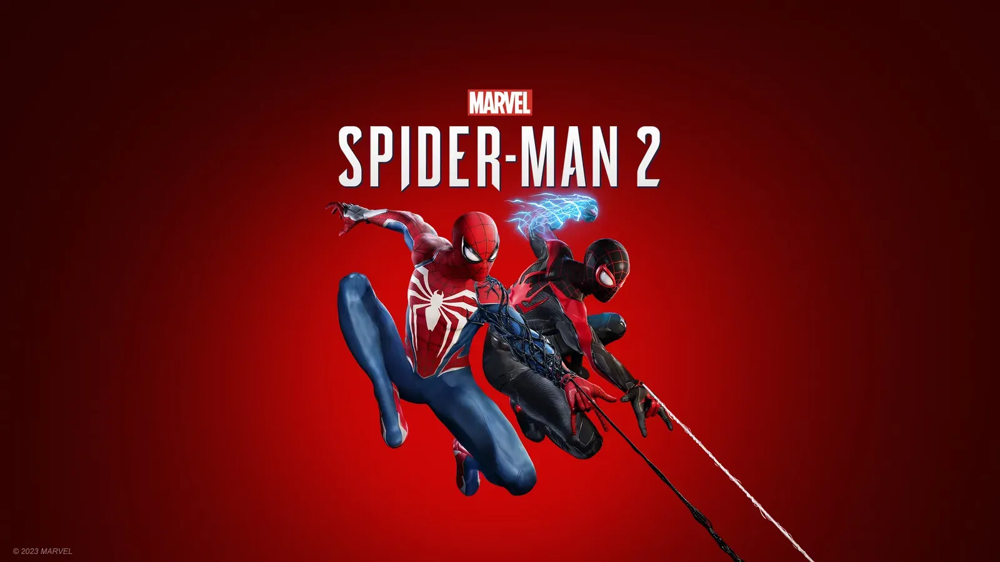
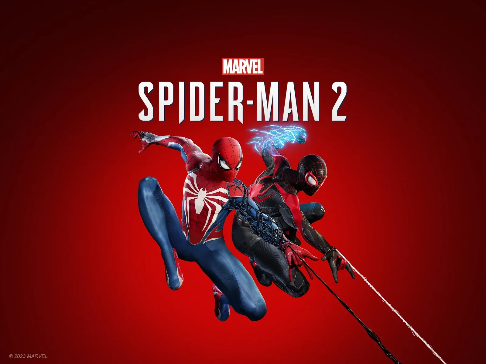
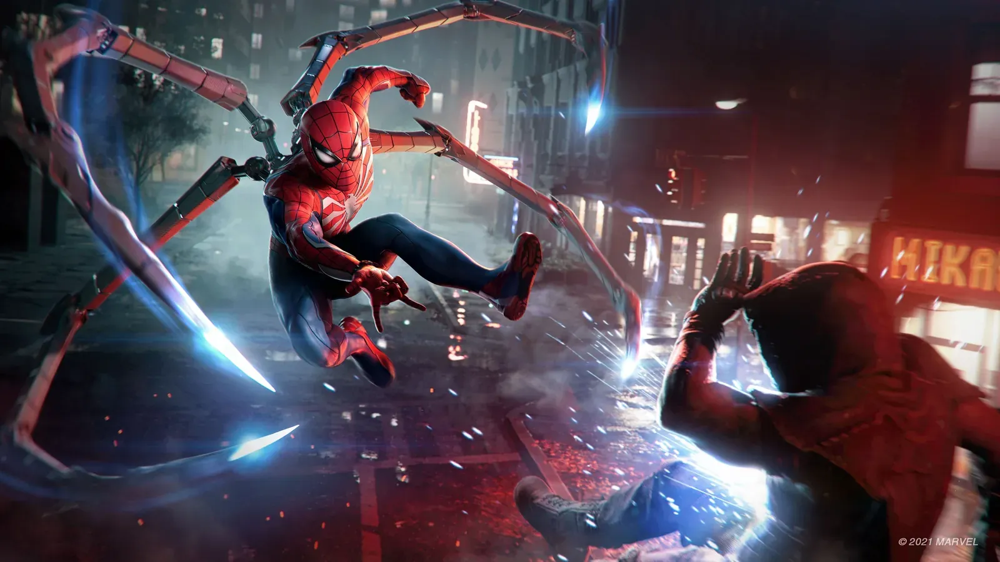
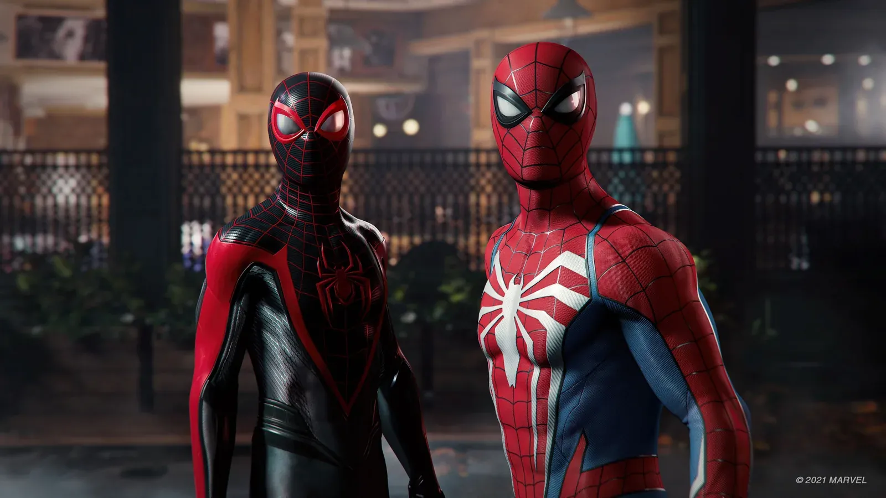
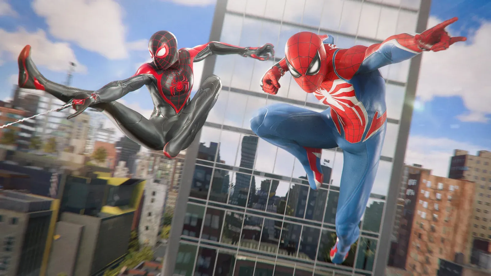
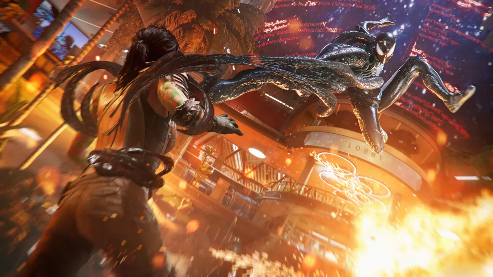
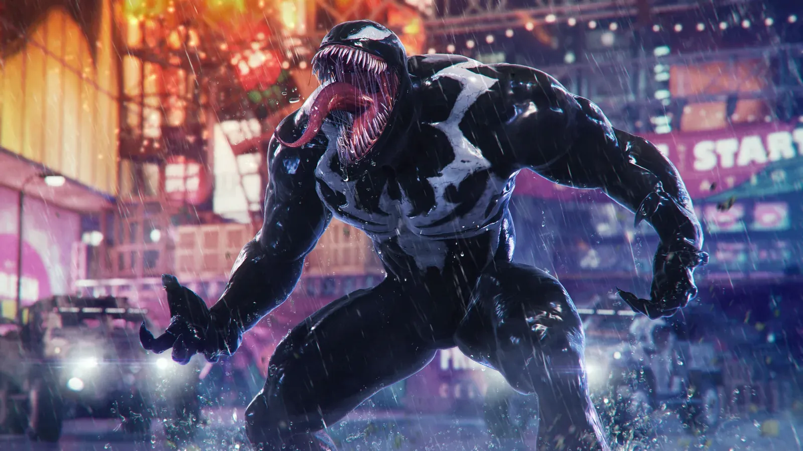

| 开发商 | Insomniac Games |
|---|---|
| 发行商 | Sony Interactive Entertainment |
| 发售日期 | PS5 版 2023 年 10 月 20 日 PC 版 2025 年 1 月 30 日 |
| 平台 | PS5 / PC（Steam · Epic） |
| 游玩时长 | 主线约 17 小时，含支线约 24 小时，全收集约 29 小时 |
| 游戏人数 | 单人 |
Insomniac 在 2023 年 10 月交出的正统续作，PS5 独占首发，2025 年 1 月才由 Nixxes 移植到 PC。这次是真正的双主角——彼得·帕克与迈尔斯·莫拉莱斯都能操作，主线里按下方向键就能近乎即时地切换，两人各有一套独立技能树和专属任务。
最大变化是毒液。彼得在中段穿上共生体战衣，攻击方式、移动方式、连招节奏全部改写，那一段的手感跟普通蜘蛛侠完全是两个游戏；另一边迈尔斯拿到了自己的生物电能力，蓄满力一拳能把一排人炸飞。战斗系统上这代新增了「格挡」（Parry），敌人出黄圈提示时挡回去，能直接打断连段。
地图从一代的曼哈顿扩到皇后区和布鲁克林，还加了科尼岛，面积接近翻倍，摆荡途中能张开蛛丝翼滑翔。反派由猎人克莱文打头阵，蜥蜴博士与毒液跟进。主线约 17 小时，比一代紧凑，但支线的分量和密度不如前作——这也是它最常被吐槽的地方。
本作的 Boss 战更强调「判读 + 格挡」，光靠闪避会被追着打。以下按主线推进顺序列出主要对手：
| 阶段 | 对手 | 攻略要点 |
|---|---|---|
| 前期 | 猎人克莱文（初次遭遇） | 招式朴实，是练格挡的最佳靶子，别硬碰 |
| 前期 | 蜥蜴博士（科特·康纳斯） | 体型大、判定广，多用蛛丝牵引拉开，盯住甩尾起手 |
| 中期 | 猎人克莱文（正式决斗） | 分阶段变速，二阶段投掷多，格挡后反击窗口很短，稳着打 |
| 中期 | 迈尔斯 vs 毒液（追逃） | 以潜行与脱离为主而非正面对抗，跟着提示走 |
| 后期 | 蜥蜴博士（最终形态） | 场地水域多，注意冲撞与横扫，空中连击效率高 |
| 后期 | 毒液（共生体合战） | 注意触手的横扫范围，双人配合是关键 |
| 终局 | 毒液 / 共生体群 | 小怪密集，先清杂兵再打本体，专注值优先处决大只的 |
| 支线 | 神秘客（Mysterio） | 幻象机制，注意分身与场景真假，别乱追 |
💡 通用思路：这代的格挡比前作的闪避更重要——很多敌人的连段只有格挡才能中断，纯闪避会被一路追打。共生体战衣爆发极高但有冷却，别浪费在杂兵身上。
| 平台 | 画质 | 帧数 | 特色 | 适合人群 |
|---|---|---|---|---|
| PS5 | 保真模式（光追）/ 性能模式 / 性能模式+（需 VRR） | 保真 30fps / 性能 60fps（时域重建） | 自适应扳机、触觉反馈、Tempest 3D 音效、无读盘过区 | 主机玩家、想第一时间玩到 |
| PS5 Pro | 支持 PSSR 上采样，画质与帧数兼顾 | 保真模式可到 60fps 档 | 光影与人群密度更高 | 已在用 Pro 的玩家 |
| PC | 超宽屏支持、光追档位更细、DLSS / FSR / 帧生成 | 取决于显卡（推荐 RTX 3070 及以上） | Mod、高帧、键鼠自定义 | 追求高帧率与画质的玩家 |
📌 PC 版首发优化一般，1.0 版本有较明显的卡顿与显存问题，后续补丁已大幅改善；配置一般的话，PS5 版更省心。






📸 以上为 Insomniac Games / 索尼互动娱乐官方公开宣传图与实机截图（来源：PlayStation 官方游戏页），版权归 Marvel 与索尼互动娱乐所有。
更强、更快、更爽，但也更短——这大概是我对它的总评。
先说好的。蛛丝翼一展开，整个移动逻辑就变了：以前是贴着楼荡，现在是能借气流一路爬到高空再俯冲下来，皇后区和布鲁克林那种矮楼区的体验跟曼哈顿完全不同。格挡这个改动也关键，一代战斗到后期基本是「闪避 + 处决」一招鲜，这代你得看敌人的连段节奏，什么时候挡、什么时候闪，是有讲究的。至于共生体战衣那十几二十分钟——不用多说，玩过就知道，触手扫出去那一下的反馈值回票价。
问题是它结束得太快。主线 17 个小时，我还想多待会儿就没了；支线做得也明显不如一代用心，数量少、设计平，很多就是「换个地方清据点」。战衣倒是给到 60 多套，但这代把战衣技能砍弱了，换装更多是换个外观而不是换套打法，这点挺可惜。
适合人群：玩过前两作、想看剧情收束、追求战斗手感的玩家。
不适合：没玩过前作的新玩家（情感点会大量流失）、期待长流程与大体量支线的玩家。